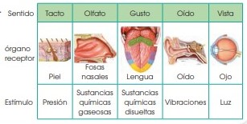

Respuesta de Actividades del Libro de Biologia 3 BGU
Elija la Unidad:
UNIDAD #0: INTRODUCCIÓN AL MEDIOAMBIENTE
1. Señala en el siguiente esquema las relaciones de la biósfera con los demás sistemas naturales.
La Biósfera es la referencia directa de ecosistema en escala global, por eso se relaciona con los demás sistemas naturales.
Con el mismo concepto de biósfera nos referimos a ecósfera, biogeósfera o cualquier otro sistema, lo que le hace un sinónimo. Dentro de la biósfera conviven todos los ambientes, climas y especies e interactuan unas con otras, formando la diversidad que les caracteriza a cada ecosistema.
La biósfera es el sistema general formado por los distintos seres y ecosistemas dentro del planeta Tierra así como las diversas relaciones entre ellos.
UNIDAD #1: SERES VIVOS Y SU AMBIENTE
1. Marca en el mapa las áreas más grandes en el mundo de los siguientes biomas terrestres: Selvas tropicales sabanas estepas Bosques mediterráneos tundra taiga
Encontrarás un mapa con los biomas terrestres del mundo e indicamos en donde se encuentra la mayor extensión de ellos.
1. Selva Tropical: América del Sur.
2. Vegetación Mediterránea: Costa sur de Europa.
3. Sabana Herbácea: África central.
4. Tundra: Norte de Europa y Asia.
5. Taiga: Norte de Europa y Asia.
6. Estepas templadas: Europa y Asia central.
1.- Contesta: a. Las palomas han sido introducidas en las zonas urbanas: ¿Qué problemas crees que conllevan las poblaciones de estas aves en las grandes ciudades? Ten en cuenta los aspectos siguientes:
• Si la población está en expansión, es estable o está en regresión. Justifícalo pensando en la disponibilidad de nutrientes y en la presencia de depredadores.
Si la población está en expansión está en regresión debido a que mantiene una relación creciente en el tiempo. Esto quiere decir que cada vez van a existir menos nutrientes y más depredadores
• El tipo de relaciones que pueden darse en las ciudades entre distintas poblaciones de palomas y las que pueden darse entre esta especie y otro tipo de animales.
La relación entre distintos tipos de palomas o con otras especies de animales, es la de competencia por los nutrientes y espacio físico. De igual manera entre especie tienen influencia los nutrientes, espacio físico y reproducción
• En algunas ciudades se han introducido halcones para regular la población de palomas. Razona el tipo de relación que se establecerá entre ambas poblaciones y represéntala mediante un modelo.
Con la introducción de halcones se va a regular el crecimiento de las palomas a través de la depredación, a más halcones menos palomas y viceversa.
2.- Mide la biodiversidad del siguiente censo de aves acuáticas, realizado en un humedal costero durante la época de hibernación.
S=4, N=2068
Avetorillo común (Ixobrychus minutus) = 1
pi = 1/2068 = 0.000483 H = –0.00533
Garcilla bueyera (Bubulcus ibis) = 1954
pi = 1954/2068 = 0.944 H = –0.0773
Garceta común (Egretta garcetta) = 111
pi = 111/2068 = 0.053 H = –0.22649
Garceta grande (Egretta alba) = 2
pi = 2/2068 = 0.000967 H = –0.00968 H = 0,31
1. Responde: ¿Cuál es el país que tiene mayor diversidad de peces, anfibios, reptiles, aves y mamíferos en Latinoamérica? (sin tener en cuenta la escala geográfica del país).
Solución:
Peces: Brasil
Aves: Colombia
Anfibios: Colombia
Reptiles: México
Mamíferos: Brasil
2.Analiza: ¿Cuáles son las plantas que se exportan desde nuestro país hacia el resto del mundo?
Plátanos.
Flores cortadas.
Flores tropicales.
Legumbres congeladas.
Granos y plantas de cacao.
Trozo de palmas.
1. Contesta:
¿Cuál es la relación entre la disponibilidad y el consumo de recursos renovables y no renovables entre los países desarrollados y los países en vías de desarrollo?
En países desarrollados la disponibilidad y uso de recursos no renovables es baja, mientras que los recursos renovables son los que predominan. Viceversa es el caso de los países en vías de desarrollo, en su mayoría.
2. Explica qué impactos producen en el suelo actividades como la agricultura o la ganadería.
• Valora los efectos de los impactos anteriores y haz una lista de las posibles medidas correctoras.
La agricultura o ganadería pueden desgastar el suelo físicamente y también pueden absorber los nutrientes que tiene. Los que se recomienda es utilizar abonos orgánicos, no usar tantos químicos para no contaminar el suelo, se recomienda la rotación de cultivos y dejar en reposo al suelo por un tiempo.
1. Enumera las principales consecuencias de la explotación insostenible del medioambiente.
Contaminación del aire y del agua y, por ende, problemas de salud para los seres vivos. Disminución de la biodiversidad por los desequilibrios en los hábitats. Aumento de la temperatura del planeta
2. Contesta:
a. ¿Cuáles son los requisitos para que la gestión ambiental sea efectiva?
Poseer normativa adecuada, existir estudios ambientales de ese territorio y que todos los seres humanos deben actuar de manera correcta individual y colectivamente.
b. ¿Qué es el desarrollo sostenible?
El desarrollo sostenible plantea explotar recursos sin poner en riesgo el futuro de dicha especie y procurar que los impactos ambientales sean mínimos
c. ¿Cuáles es la diferencia entre las acciones preventivas y las acciones correctoras?
La diferencia entre las acciones preventivas surge antes del problema para prevenir mientras que las acciones correctivas surgen después del problema para corregir algo
3. Enlista dos antecedentes importantes del Protocolo de Kioto.
Alto impacto ambiental, altos niveles de contaminación, no hay un acuerdo entre países sobre niveles de contaminación
UNIDAD #2: ECOLOGÍA Y CRECIMIENTO POBLACIONAL DE LOS SERES HUMANOS
1. Escribe cinco impactos ambientales ocasionados por los humanos.
• Aumento de gases tóxicos a la atmósfera.
• Aceleración del calentamiento global.
• Enfermedades debido a la contaminación.
• Aire menos puro.
• Clima variable.
2. Enumera cinco recursos renovables y cinco recursos no renovables.
Renovables: Biomasa, olas, viento, radiación solar, energía hidroeléctrica.
No renovables: Gas natural, petróleo, minerales, metales, carbón.
3. Analiza por qué pertenecen a cada grupo.
Pertenecen a cada grupo simplemente porque los unos son recursos que no se acaban y los otros son limitados respectivamente.
1. A partir de los datos del cuadro sobre la proyección de la población mundial hasta el año 2050, construye un gráfico de barras sobre el crecimiento de la población, diferenciando países desarrollados y países en desarrollo.
Para el año 2015, la ONU publicó una serie de proyecciones en base al crecimiento de la población mundial. En el informe se expresa que para el año 2050 se prevé un alrededor de 9700 millones de personas, más característico en continentes con bajos y medianos ingresos, siendo África y Asia los que dan mayores probabilidades de crecimiento demográfico.
Solo en África se prevé un alza en la población que alcanza a los 1300 millones de personas, representando un aumento del 109% respecto a lo registrado en 2015. Asia es la segunda que aportará mayor aumento poblacional y Europa se irá rezagando, registrando una caída de 31,6 millones de personas en 35 años.
Los países que concentrarán el mayor aumento poblacional son 8, India (394 millones), Nigeria (216), Pakistan (121), República del Congo (118), Etiopía (89,1), Estados Unidos (67,1), Indonesia (64,7) y Uganda (62,8)
2. Según el mapa anterior ¿Cuáles son los países con mayor densidad poblacional?
Los países asiáticos.
1. Indica dos procesos generados a través de la bioingeniería.
Bioingeniería de aguas residuales y Bioingeniería para la restauración fluvial.
2. Consulta cuáles son los países más avanzados en este campo de investigación
Países como Estados Unidos, China, Rusia, entre otros
1. Contesta:
a. ¿Cuáles son los hongos que más se utiliza en procesos de laboratorio?
Penicillium.
b. ¿Cuáles son los mayores logros obtenidos dentro de la ingeniería genética en bacterias en los últimos 5 años?
La secuenciación del ADN, biocombustibles, entre otros
UNIDAD #3: ANATOMIA Y FISIOLOGIA DE LOS SERES VIVOS
1. Explica la función que realizan las siguientes partes del ojo: córnea – esclerótica – conjuntiva – humor acuoso – humor vítreo – retina
Córnea.- es la capa transparente que recubre la parte anterior al ojo.
Esclerótica.- es la capa que da forma y consistencia al globo ocular.
Conjuntiva.- es la membrana que recubre y protege el globo ocular y el interior de los párpados.
Humor acuoso.- es la sustancia líquida que llena la cavidad situada entre la córnea y el cristalino.
Humor vítreo.- es la sustancia gelatinosa que ocupa la parte interna del globo ocular. Retina.- es la lámina de células que recubre la parte posterior e interna del ojo.
2. Contesta:
a. ¿Qué parte del ojo actúa como lente y permite enfocar las imágenes?
El cristalino.
b. ¿Qué relación existe entre el iris y la pupila?
La relación es que el iris es la capa que puede dilatarse o contraerse para regular el paso de la luz. Esto presenta un orificio que se llama pupila, por donde la luz penetra al interior del ojo.
1. Cita las partes del oído que son membranas y las que son huesecillos. Explica la función de cada una de ellas.
Las partes del oído son: pabellón auricular, conducto auditivo externo, tímpano, estribo, caracol, ventana oval, nervio auditivo, yunque, martillo.
Funciona cuando el pabellón auricular recoge la vibración y el conducto auditivo la transmite al tímpano. La cual es una membrana que transmite la vibración a una cadena de huesecillos formada por el martillo, el yunque y el estribo. Este último, al ser golpeado, presiona sobre la membrana denominada ventana oval. Por esta ventana pasa la vibración por una cavidad enrollada en espiral llamada caracol. El líquido transmite la vibración a los cilios de algunas de las células que revisten el interior de las paredes del caracol. Esta vibración transmite la señal al nervio auditivo.
2. Contesta:
a. ¿Qué consecuencias crees que puede tener una perforación en el tímpano?
Puede que se tenga problemas para escuchar o que el martillo, yunque o estribo se vean afectados
1. Responde:
a. ¿Qué tipo de movimientos detectan los canales semicirculares? ¿Y los órganos otolíticos?
Movimientos de la cabeza, en otros movimientos, la endolinfa provoca desplazamiento de los otolitos
b. Supón que padeces un trastorno que afecta al aparato vestibular ¿qué síntomas crees que puedes padecer?
Sería complicado conservar el equilibrio y habría problemas en el oído interno.
1. Responde:
a. ¿Por qué crees que el sentido del gusto y del olfato se encuentran muy próximos entre sí?
Debido a que al oler algo, necesitamos una respuesta inmediata acerca de lo que percibimos.
b. ¿Por qué los receptores del tacto están distribuidos por todo el cuerpo y son muy abundantes en las palmas de las manos?
Porque no sentiríamos en algunas partes de nuestro cuerpo dolor o calor o frío. Especialmente sentimos en las manos porque son el medio por el cual sentimos todo.
2. Explica a qué tipo de estímulos son sensibles las fosas nasales, los botones gustativos y los receptores de la piel.
Las fosas nasales son sensibles a estímulos de sustancias químicas gaseosas, los botones gustativos son sensibles a sustancias químicas disueltas y los receptores de la piel son sensibles a la presión
3. Construye una tabla sobre los sentidos, los órganos en los que residen, las partes de estos órganos y los estímulos que perciben.

1. Explica la diferencia entre:
•Nervios sensitivos y nervios motores.
Los nervios sensitivos están formados por neuronas sensitivas y se encargan de transmitir la información desde los órganos de los sentidos hasta el sistema nervioso central.Mientras que los nervios motores están formados por neuronas motoras y transmiten los impulsos nerviosos desde el sistema nervioso central hasta diferentes órganos del cuerpo.
•Red nerviosa somática y red nerviosa autónoma.
Red nerviosa somática
Constituye el sistema nervioso periférico neuromotor.
La fibra nerviosa es continua.
Cada fibra nerviosa eferente se une a un músculo estriado, formando la placa motora.
La acción del nervio en la placa motora es mediada por los neurotransmisores, como la acetilcolina.
Permite e control voluntario de los movimientos.
En la placa motora, la acción del nervio siempre va a estimular la contracción muscular
Red nerviosa autónoma
Controla todos los órganos internos, compuestos por musculatura lisa o tejido secretor.
Su actividad no es regida por la voluntad.
Las fibras nerviosas eferentes son discontinuas, siendo interrumpidas en su trayecto por la presencia de ganglios nerviosos.
Puede activar o inhibir la actividad de un órgano.
2. Describe los órganos de los sentidos, las áreas del cerebro y los nervios que intervienen en el proceso que tiene lugar cuando vemos un alimento que nos gusta hasta que nuestro brazo se mueve para acercarlo a la boca
A través de los ojos transmiten la información al cerebro a la médula espinal, la cual con genera que el nervio motor y el nervio sensitivo generen una respuesta, sientan y cojan el alimento para comerlo.
1. Responde
a. ¿Qué son las glándulas endocrinas?
Son un conjunto de glándulas que producen mensajeros llamadas hormonas conduciéndolas por el conducto excretor hacia los capilares sanguíneos, para que realicen su función en órganos distantes del cuerpo.
b. ¿Qué otra función, además de la secreción de hormonas, tienen el páncreas, los ovarios y los testículos?
Sirven para dar funcionamiento al sistema endocrino.
2. Explica dónde se localiza y cuál es la función del hipotálamo.
Es una porción del encéfalo situada en la zona central de la base del cerebro y es el encargado de la regulación del sistema nervioso, así también como de la actividad de la hipófisis
UNIDAD #4: REPRODUCCIÓN EN SERES VIVOS
1. Respecto la reproducción sexual contesta:
a. ¿Cómo la definirías?
Proceso en el cual participan dos especies para reproducirse
b. ¿Todos los gametos se originan por meiosis?
No, también se pueden formar por mitosis.
c. ¿Un gameto sin fecundar puede originar un individuo? ¿Cómo se llama esta forma de reproducción?
Reproducción asexual.
2. Define los siguientes conceptos: isogamia, ovocélula, gametófito, gónada y esporangio.
Isogamia.- forma de reproducción sexual propia de los vegetales en la cual dos gametos que se unen para formar el cigoto son idénticos en tamaño y estructura.
Ovocélula.- son células sexuales o gametos femeninos.
Gametofito.- fase del ciclo vital de una planta en que las células presentan núcleos haploides.
Gónada.- órganos reproductores de los animales que producen gametos o células sexuales. Esporangio.- estructura en forma de saco que contiene esporas, puede estar sostenido por un pedúnculo.
3. Razona qué tipo de reproducción es más ventajosa en un ambiente en proceso constante de cambio.
Solución: La reproducción sexual tiene como ventaja la recombinación genética y con ella la supervivencia de los individuos más aptos a los ambientes cambiantes
1. En una célula somática del ser humano, ¿cuántos cromosomas y pares hay? ¿Es una célula diploide? Razona la respuesta.
Solución: Las células somáticas humanas son diploides y poseen 2 series de cromosomas, siendo n representado por el número de tipos de cromosomas, eso quiere decir que la célula somática humana posee 46 cromosomas propios de la especie humana (2n=46).
2. El ciclo biológico de una alga es haplonte. Realiza un esquema con los conceptos siguientes: gametos, alga juvenil, alga adulta, fase haploide, fase diploide, meiosis, fecundación, n y 2n.
Gametos
Los gametos son las células sexuales particulares de cada sexo (masculinos, femeninos) los cuales son producidos por meiosis o mitosis partiendo de las células germinales.
Alga juvenil
Es aquella forma de alga que aún no ha alcanzado su posición adulta y por lo tanto no puede reproducirse.
Alga adulta
Es aquella planta acuática que ya ha alcanzado su máxima formación y por lo tanto está lista para reproducirse y realizar todos sus procesos.
Fase haploide (n)
Es la fase en la que los núcleos celulares presentan la mitad del número de cromosomas.
Fase diploide (2n)
Es aquella fase celular en que el núcleo posee los números de cromosomas normal, es decir, completos.
Meiosis
Es el proceso de división que es llevado a cabo por las células reproductoras, en el cual se disminuye el número de cromosomas a la mitad.
Fecundación
Durante la reproducción sexual es llevada a cabo la fecundación y es cuando los dos gametos sexuales de cada sexo se fusionan para generar un embrión, a así, permitir el desarrollo de un nuevo individuo
3. Observa los ciclos biológicos de Chlamydomonas, Aurelia, Mus musculus y Pteridium aquilinum. Elabora un informe que trate los siguientes puntos:
• Predominio de la fase haploide o de la diploide.
• Momento en que se produce la meiosis y la fecundación.
• Si se utiliza o no una estrategia doble de reproducción, y, si es así, qué tipos de reproducción asexual implica
La meiosis, según en qué especie se produzca, ocurre en diferentes momentos del ciclo vital.
En muchos protistas y hongos, tales como el alga Chlamydomonas y el moho Neurospora, sucede después de la unión de las células que la fecundan en forma inmediata. Dichas células generalmente son haploides, y son restablecidas por la meiosis después que se produce la fecundación.
la reproducción asexual solo requiere un único progenitor para, después de continuadas mitosis, poder engendrar una gran cantidad de descendientes, todos exactamente iguales.
si el medio ambiente sufre bruscas transformaciones volviéndose y se vuelve hostil, lo más posible es que mueran todos si carecen de la información genética requerida para que se puedan adaptar al nuevo medio ellos mueran, si no poseen la información genética necesaria para adaptarse a la nueva situación.
Con la meiosis contrariamente, se originan cuatro gametos diferentes, debido a la reciprocidad de información que se origina entre los cromosomas homólogos.
Cada célula sexual, poseen un contenido genético distinto, diversos entre sí y diferente del de la célula progenitora. Al producirse produce la fecundación, dos gametos de diferente sexo, se fusionan y originan un cigoto que será distinto de los dos progenitores.
La meiosis se produce en las reproducciones sexuales, en las asexuales el proceso de reproducción se da la mitosis.
1. Explica la localización y la función de los siguientes componentes del sistema reproductor masculino: escroto – próstata – uretra – conductos deferentes – epidídimo – vesículas seminales – glándulas de Cowper
Testículos.- dos órganos fuera de la cavidad abdominal, recubiertos por el escroto. En su interior se encuentran los túbulos seminíferos donde se forman los espermatozoides. Epidídimos.- son dos estructuras situadas en la parte superior de los testículos que intervienen en la maduración de los espermatozoides.
Conductores deferentes.- son los conductos por los cuales los espermatozoides van a la uretra. Vesículas seminales.- dos órganos encima de la próstata que producen secreciones, las cuales nutren a los espermatozoides y, junto a ellos forman el semen.
Próstata.- órgano situado debajo de la vejiga que segrega sustancias para nutrir a los espermatozoides.
Uretra.- conducto que recorre el interior del pene, por el cual los espermatozoides salen. Pene.- órgano que en su extremo posee un engrosamiento.
El prepucio es el repliegue de piel que lo recubre
2. Contesta:
a. ¿Por qué los testículos están situados fuera del abdomen?
Porque es ahí donde se forman los espermatozoides
b.¿Qué proceso se puede alterar si estos órganos no se encuentran a la temperatura adecuada?
La maduración de los espermatozoides y el semen.
1. Define las siguientes palabras: fecundación – coito – eyaculación – cigoto –embrión embarazo – implantación – cavidad amniótica – placenta – cordón umbilical – feto
Ovarios: Son dos órganos situados en la cavidad pélvica, encargados de la producción de óvulos.
Trompas de Falopio: Son dos conductos, cada uno de los cuales comunica con un ovario y con el útero. Se encargan de recoger los óvulos liberados por los ovarios y conducirlos al útero.
Útero o matriz: Es un órgano musculoso que puede ensancharse para alojar al feto en caso de embarazo. Una de las capas que lo constituyen es el endometrio, capa mucosa con muchos vasos sanguíneos que se regenera periódicamente y cuya función es proteger y nutrir al óvulo fecundado.
Vagina: Es el conducto que comunica el útero con el exterior, sus paredes son musculosas y elásticas.
Vulva: Es la parte exterior del sistema reproductor femenino y consta del monte de Venus, los labios mayores, los labios menores y el clítoris, pequeño órgano eréctil. Entre los labios menores y la pared vaginal se encuentran las glándulas de Bartolino que se encargan de secretar un líquido lubricante antes del coito.
2. Ordena secuencialmente las siguientes fases del embarazo y del parto: implantación – alumbramiento – formación del cigoto – expulsión – dilatación – fecundación – formación de la placenta
- Fecundación: el óvulo es fecundado por el espermatozoide.
- Implantación: anclaje del embrión en el endometrio.
- Formación de la placenta: órgano efímero que permitirá alimentar y proteger al embrión.
- Formación del cigoto: inicia el proceso de gestación del embrión.
Orden secuencial de las fases del parto:
- Dilatación: del cuello uterino.
- Expulsión: paso del bebé del interior del útero al exterior.
- Alumbramiento: expulsión de la placenta y del cordón umbilical.
3. Indica qué órganos tardan más en desarrollarse en el feto.
La diferencia es que, por un lado, en la formación de los espermatozoides, se da en los túbulos seminíferos. En estos túbulos se encuentran las células precursoras de los espermatozoides, que se transforman dando lugar a éstos. Una vez formados, los espermatozoides salen de los testículos hacia el epidídimo, donde maduran.
Mientras que, en la formación de óvulos, las células precursoras de los óvulos se encuentran en los ovarios de la mujer desde su nacimiento. Estas células precursoras interrumpen su desarrollo durante aproximadamente 12 años, momento en el que comienza la maduración del aparato reproductor femenino.
1. Responde las siguientes preguntas:
a. ¿Hasta qué edad es recomendado dar de lactar al bebé?
Hasta los cuatro meses.
b. En casos de que la madre posea poca leche, ¿qué se debe hacer?
Se debe complementar con leches maternizadas
UNIDAD #5: RELACIONES HUMANAS Y SALUD SEXUAL
1. Explica qué son la salud y la enfermedad.
La salud es el estado en el cual un ser vivo no tiene ningún padecimiento o enfermedad y puede llevar a cabo con normalidad sus cotidianidades. La enfermedad es una alteración o mal funcionamiento de un organismo debido a causas internas o externas.
2. Haz un esquema de cómo funciona el sistema de salud en el Ecuador.
El Sistema de Salud en el Ecuador se caracteriza por estar dividido en sectores, tanto públicos como privados. Es un sistema de seguridad social que está financiado por cotizaciones de los trabajadores del sector formal y este, a su vez, coexiste con los diferentes sistemas privados que son para la parte de la población con mayor poder adquisitivo. Existen también múltiples financiadores y proveedores: El Ministerio de Salud, el Seguro Social IESS, ICS, otras ONG's, etc, los cuales actúan de forma autónoma sobre las instituciones de salud pública mayormente.
3. Contesta:
a. ¿Por qué es tan difícil conseguir que toda la población goce de buena salud?
Debido a que no hay una asistencia sanitaria suficiente para atender a toda la población
b. ¿Por qué una enfermedad que altere a un órgano puede afectar a todo el organismo?
Debido a que, si no se trata correctamente y a tiempo, esta puede propagarse por todo el organismo de órgano en órgano.
1. Define los siguientes términos: patógeno – parásito – hospedador
Patógeno: es todo organismo o sustancia capaz de producir enfermedad. Puede ser primario u oportunista.
Parásito: para: al lado y sitos: alimento. Parásito es todo ser vivo, animal o vegetal que pasa una parte o la totalidad de su existencia en el interior o superficie de otro ser vivo a expensas de lo cual se nutre o le causa daño.
Hospedador: es todo ser vivo capaz de albergar otro ser vivo en su interior o capaz de ser infectado por un agente infeccioso.
2. Explica qué relación existe entre ellos.
Los microorganismos son seres vivos microscópicos que pueden vivir en diversos medios, como el agua, el suelo y los seres vivos. Las bacterias, los hongos microscópicos y los protozoos son microorganismos, algunos de ellos son patógenos. Los microorganismos y virus patógenos obtienen nutrientes y se reproducen a expensas del ser humano, por ello se les llama parásitos; el ser humano, en cambio, sale afectado, por lo que se denomina hospedador.
3. Clasifica las especies de patógenos estudiados, según estén formados por células eucariotas, células procariotas o no estén formados por células. Indica también cuáles son unicelulares y cuáles pluricelulares.
Bacterias: son seres vivos formados por una sola célula de estructura muy sencilla, llamada célula procariota. La mayoría de las bacterias son de vida libre, es decir, no necesitan parasitar otra célula para vivir. No obstante, algunas de las que son patógenas causan enfermedades graves como la tuberculosis, la sífilis o el tétanos.
Protozoos: son organismos unicelulares eucariotas. Algunos poseen cilios o flagelos para desplazarse. Hay especies de protozoos parásitas del ser humano, como Trypanosoma sp., que produce la llamada enfermedad del sueño. El protozoo Plasmodium sp. provoca la malaria.
Hongos: son un grupo de organismos eucariotas con representantes unicelulares y pluricelulares. Algunos hongos son parásitos del ser humano y le provocan infecciones llamadas micosis. Normalmente las micosis afectan a la piel a las mucosas de la boca o de los genitales, y producen fuertes picores.
Virus: tienen una estructura muy sencilla, distinta a la de una célula. En su forma más simple solo poseen una cápsida proteica que envuelve y protege a un ácido nucleico. Algunos de ellos, como es el caso de los virus de la gripe o del VIH, presentan un recubrimiento membranoso llamado envoltura. Puede considerarse que se reproducen, ya que se multiplican, pero siempre en el interior de las células, por lo que todos los virus son parásitos obligados de los seres vivos. Hay muchos virus que producen enfermedades al ser humano, como los virus de la gripe.
1. Explica las diferencias entre el contagio directo e indirecto.
El contagio es la transmisión de la enfermedad a una persona sana. Puede producirse de forma directa, a través de la sangre, la saliva u otras secreciones de una persona infectada, o de forma indirecta, si el contagio se produce a través de un elemento transmisor, como el agua
2. Pon dos ejemplos de cómo puede producirse cada tipo de contagio.
El contacto directo por ejemplo puede darse por compartir jeringas o por relaciones sexuales. El contacto indirecto puede darse por compartir agua, vasos, tazas
3. Cita un ejemplo en el que el sistema del cuerpo humano pueda ser afectado por cada una de las enfermedades que aparecen en la tabla.
Gastroenteritis afecta al intestino. Meningitis afecta a las meninges y a la cabeza. La candidiasis afecta a la piel. La malaria afecta al hígado. El sarampión afecta a la piel y vías respiratorias. La gripe afecta a las vías respiratorias.
1. Observa la tabla de las enfermedades infecciosas y nombra las enfermedades que se transmiten por contagio directo y las que se transmiten por contagio indirecto.
Directo: Meningitis, Sarampión, Gripe.
Indirecto: Gastroenteritis, Candidiasis, Malaria
2. Explica qué medidas generales hay que tener en cuenta para prevenir las enfermedades infecciosas.
Hábitos de higiene como, por ejemplo: lavarse las manos antes de tomar alimentos y ducharse con frecuencia, tienen la finalidad de impedir el contacto prolongado con agentes patógenos. Evitar el contacto con utensilios que puedan contagiar enfermedades, como vasos y cubiertos usados o toallas utilizadas en la playa o la piscina. La administración de vacunases la principal medida preventiva por parte de la asistencia sanitaria pública
3. Contesta:
a. ¿Cuál es la función de las vacunas?
Las vacunas proporcionan defensas a las personas sanas para que, en caso de ser infectadas por un agente patógeno, el sistema inmunológico pueda eliminarlo y evitar que se manifieste la enfermedad
b. ¿Entre qué edades se aplica la mayor parte de las vacunas?
Los primeros 18 meses.
c. ¿Por qué crees que se hace de esta manera?
En los primeros 6 meses de vida de un ser humano. Porque el bebé no tiene desarrollada su inmunidad y vacunarlas ayuda a que sean inmunes a esas enfermedades. Algunos anticuerpos son heredados en la lactancia de la madre, sin embargo es necesario aplicar vacunas para evitar contraer enfermedades más peligrosas en el futuro.
1. Explica qué es un tumor.
Un tumor es un tejido formado por células que proliferan de un modo incontrolado.
2. ¿Qué factores pueden influir en el desarrollo de un cáncer?
En ocasiones, algunas células se transforman y los mecanismos que controlan la división celular se modifican. El ritmo de la mitosis se acelera, por encima de los niveles normales, y por este motivo, las células crecen de forma acelerada, desorganizada e incontrolada, invadiendo el espacio de otras células, por lo que se forma un tumor. Cuando las células del tumor invaden a otros tejidos sanos se trata de un tumor maligno o cáncer. La extensión de las células cancerosas a otras zonas del organismo se conoce como metástasis. Esta proliferación celular es la que, a menudo, pone en peligro la vida del individuo que la padece. El tabaco, los rayos solares y una dieta desequilibrada pueden influir en el desarrollo de un cáncer.
3. ¿Cómo se puede reducir la probabilidad de padecer un cáncer?
Un estilo de vida saludable, evitando los agentes carcinógenos, reduce la probabilidad de formación de tumores malignos. Si se desarrolla el tumor, un paso importante para su curación es su detección en las primeras fases
4. ¿Qué otros trastornos o enfermedades podemos prevenir con estas mismas medidas?
Todo tipo de enfermedades e infecciones.
1. Responde:
a. ¿Qué diferencias hay entre dependencia y tolerancia a una droga?
La dependencia puede ser física o psíquica. La dependencia física se produce porque el cuerpo se acostumbra al efecto de una droga y, si cesa el consumo, se producen graves alteraciones conocidas como síndrome de abstinencia. La dependencia psíquica es la sensación de mejora en el estado de ánimo cuando se consume la droga, que empuja al adicto a volverla a consumir. La tolerancia es el proceso de adaptación del organismo a una droga. El sistema nervioso se vuelve menos sensible, debido a que las neuronas están a menudo bajo los efectos de la droga. El cuerpo se habitúa a una determinada dosis y ya no se consigue el efecto deseado por el consumidor. Cada vez se consumen dosis más altas para conseguir dicho efecto.
b. ¿Qué es el síndrome de abstinencia?
El alcohólico sufre una transformación del carácter y se vuelve irritable. Si deja de beber sufre el síndrome de abstinencia que provoca náuseas, vómitos y temblores
2. Explica las diferencias entre drogas alucinógenas, depresoras y estimulantes.
Drogas alucinógenas.- Alteran la transmisión de los impulsos nerviosos y falsean la percepción de las sensaciones, distorsionando la realidad, como la marihuana.
Drogas depresoras.- Enlentecen o bloquean la percepción sensorial y la respuesta motora, como el alcohol.
Drogas estimulantes.- Aceleran la actividad del individuo, como el tabaco.
3. Contesta:
a. ¿Por qué el tabaco es una droga?
Contiene nicotina, una droga estimulante del sistema nervioso. Además, los alquitranes, gases como el monóxido de carbono y numerosas sustancias irritantes provocan enfermedades como la bronquitis crónica, el infarto y el cáncer de pulmón.
¿Qué sustancia produce adicción?
Cuando baja la concentración de nicotina en la sangre, los fumadores sienten desasosiego y necesidad de fumar
b. ¿Qué tipo de trastornos físicos y psíquicos produce el alcohol?
El alcohol es una droga depresora. Los efectos que produce una misma cantidad de alcohol varían según la edad, el peso y el sexo de las personas. La intoxicación aguda se produce si se toma mucho alcohol en un corto intervalo de tiempo; esta intoxicación puede llevar al coma etílico e incluso a la muerte. El alcohólico sufre una transformación del carácter y se vuelve irritable.
4. Razona la siguiente frase: «El consumo de drogas siempre es un riesgo».
Consumir drogas una vez no significa ser adicto, pero la repetición en el consumo predispone a la adicción. Esto depende de cada persona, pero es un riesgo, depende principalmente del ambiente en el que vivas, tu personalidad y el tipo de droga
1. Observa la tabla de los accidentes y explica qué relación hay entre el tipo de accidentes y las edades en que se producen.
Los accidentes domésticos se dan en edades entre 1 y 6 años debido a falta de cuidado y vigilancia por parte de los adultos. Los accidentes laborales se dan en adultos menores de 65 años debido a falta de medidas de seguridad y exceso de trabajo. Los accidentes de tráfico se dan entre 18 y 30 años debido a un exceso de velocidad, consumo de drogas y por no respetar las normas de tráfico
2. Explica qué protecciones hay que llevar y qué medidas de seguridad son necesarias para circular en auto y en bicicleta
Deben respetarse los pasos de peatones, los semáforos y las señales de tráfico. Ha de utilizarse el cinturón en el vehículo y el casco en las motocicletas y bicicletas.
1. Explica qué se debe hacer antes de socorrer a un herido.
Hay que estar preparado para poder prestar primeros auxilios. Se debe actuar con rapidez, pero sabiendo qué se debe hacer y qué no. Antes de aplicarlos, debemos tener la seguridad de que tanto la persona accidentada como nosotros estamos fuera de todo peligro, y avisar a los servicios de emergencia.
2. Describe situaciones cotidianas en las que una persona pueda sufrir un accidente que precise la aplicación de las técnicas de primeros auxilios descritas.
Una persona puede sufrir accidentes de cualquier manera, podemos mencionar:
1- Si realizamos o preparamos una comida podemos tener un accidentes al quemarnos o cortarnos, la idea de los primeros auxilios siempre es mantener la calma, ver la gravedad de la herida, aplicar instrumentos básicos y luego llamar a emergencia.
2- Otro ejemplo es manejar auto, debido a muchas circunstancias se pueden tener diferentes accidentes, en estos casos se sufren grandes heridas y problemas, los primeros auxilios recomiendan no mover bruscamente al paciente y llevar inmediatamente a un centro clínico.
Situaciones cotidianas en las que una persona puede sufrir un accidente.
Quemaduras: Mientras cocinas puede que por accidente agarres la olla caliente o que te salpique agua o aceite caliente.
Caidas: Caminando o corriendo aunque es de las cosas más comunes puede que las personas se tropiecen o pierdan el equilibrio y se caigan.
Intoxicaciones: Estas pueden ocurrir al ingerir líquidos o comidas que hayan estado en contacto con productos químicos.
Cortaduras: Es de los accidentes más comunes que pueden ocurrir ya que puede suceder con muchos objetos ya sean tijeras, cuchillos, o algún otro objeto punzante.
Accidentes automovilísticos: Pueden suceder por usar el teléfono mientras manejan, por estar distraído, manejar a altas velocidades entre otras muchas cosas, son también de los accidentes más comunes.
1. Investiga y responde:
a. ¿Cuál es la función del Instituto Ecuatoriano de Seguridad Social (IESS)?
Es el organismo encargado de brindar la seguridad social, que incluyen: cobertura médica de sus afiliados para lo cual cuenta con hospitales situados en varios lugares del país. También otorga préstamos hipotecarios y quirografarios, y acceso a pensiones de jubilación a los trabajadores.
b. ¿Cómo funcionan las aseguradoras de vida?
El seguro de vida actúa como resguardo frente a una posible situación económica ante la pérdida de un familiar. Muchas personas tienen preocupaciones acerca de los problemas económicos que pueden generar a su familia a partir de su muerte. El seguro de vida actúa como resguardo frente a una posible situación económica, en el que el beneficiario recibirá una suma de dinero en caso de su fallecimiento
c. ¿Cuál es la diferencia entre un seguro de salud privado y público? Nombra al menos tres
Los seguros sociales o públicos tienen por objeto amparar a la clase trabajadora de riesgos como invalidez, muerte, accidentes, enfermedades entre otras. Las leyes y reglamentos se dan por decretos. Permite a los jubilados tener una renta. Los seguros privados funcionan en los que el asegurado los contrata voluntariamente para cubrirse de ciertos riesgos a través de un pago exclusivo. Se concretan con una póliza en la que constan derechos y obligaciones de ambas partes, del asegurado y del asegurador
1. Discutir sobre sus causas, consecuencias y riesgos:
a. ¿Qué elementos influyen en la sexualidad?
La sexualidad humana se puede definir como la manera en que el ser humano se manifiesta como hombre o como mujer, determinado por sus creencias, normas, educación, valores y cultura.
Los elementos que influyen en la sexualidad son:
- Biológicos: el sexo con el que nace.
- Psicológicos: sentirse y creerse hombre o mujer.
referentes al comportamiento que define la sociedad para cada sexo.
b. ¿Qué es la pubertad?
Época de la vida en la que el niño experimenta cambios físicos y hormonales que marcan la transición a la adultez. El niño pasa a presentar características sexuales secundarias y se vuelve capaz de tener hijos.
c. ¿Cuáles son los principales cambios físicos y algunos de los cambios psíquicos de esta etapa?
Resulta increíble cómo los adolescentes pasan de ser niño/a pequeño/a a un hombrecitos o mujercitas. A partir de los 11 años se empiezan a experimentar los cambios físicos. Alrededor de los 13, cuando llega la pubertad, es cuando podemos ver los cambios tanto físicos como psíquicos. El adolescente deja de ser niño o niña. El futuro adulto empieza a experimentar toda clase de cambios, sobre todo hormonales
2. Responde: a. ¿A qué edad aconseja la OMS tener hijos? Justifica tu respuesta.
Entre los 25 y 35 años
3. Define qué son las técnicas de reproducción asistida. Solución: Las técnicas de reproducción asistida son todos los tratamientos de fertilidad en los cuales se manipulan mediante métodos específicos a los óvulos y espermatozoides.
Las técnicas de reproducción asistida son todos los tratamientos de fertilidad en los cuales se manipulan mediante métodos específicos a los óvulos y espermatozoides
4. Consulta acerca de cuántos tipos de orientaciones sexuales existen y discute en clase acerca de su importancia e incidencia en la sociedad
Los tipos de orientaciones sexuales que se reconocen hoy en día son:
Heterosexualidad. Es la más reconocida y aceptada por la sociedad occidental, ya que responde a mandatos tradicionales patriarcales y prejuicios religiosos difíciles de erradicar. La persona heterosexual es aquella que siente atracción física y/o emocional por las personas del sexo opuesto. Está además fuertemente justificada por los sectores conservadores por la necesidad de reproducción de la especie.
Homosexualidad. La persona homosexual es aquella que siente atracción física y/o emocional por personas del mismo sexo. Un hombre homosexual se conoce coloquialmente con el término anglófono "gay", mientras en el caso de una mujer se denomina "lesbiana".
Bisexualidad. Hay estudios que afirman que todas las personas nacemos con una condición bisexual. Prácticas de este tipo se conocen desde la Antigüedad en civilizaciones como la romana o la griega. La bisexualidad responde a atracciones física y/o emocionales por ambos sexos, y se da en hombres y mujeres.
Transexualidad. Son aquellas personas que sienten haber nacido en un cuerpo equivocado, que están convencidas emocionalmente de que no pertenecen al sexo biológico con el que nacieron. Lo/as transexuales consumen estrógenos (hormonas) para transformar su cuerpo de manera paulatina, y algunos realizan una intervención quirúrgica para cambiar su sexo. Además adoptan formas de vida similares a las del género de su identidad sexual (es decir de lo que sienten ser).
Asexualidad. Hay personas que no experimentan atracción sexual por ninguno de los dos sexos biológicos. Estas personas no tienen vida sexual ni cuentan con orientación al respecto. Aunque pueda parecer extraño en nuestra sociedad tan sexualizada, ser asexual no es una enfermedad ni un padecimiento.
Pansexualidad. Estas personas se sienten atraídas física y/o emocionalmente por otras sin considerar su orientación sexual, identidad o apariencia física. Les atrae "el ser humano" y su personalidad, sin importar los aspectos sexuales o de género.
Antrosexualidad. Se confunde con la pansexualidad, pero es algo bien diferente. Los antrosexuales desconocen su propia orientación sexual y a la vez se sienten atraídas por cualquier persona.
Demisexualidad. Son aquellos que solo desarrollan una atracción sexual si existe atracción emocional con la otra persona. No tiene que ver solamente con el amor romántico o de la pareja, sino que puede darse en una fuerte amistad.
Sapiosexual. Se sienten atraído/as por cualquier ser humano siempre que tenga una gran inteligencia. Les gustan aquellas personas -hombre o mujer- que tienen "algo de que hablar".
Graysexual. Son aquellos que están entre la sexualidad y la asexualidad. Es decir que a veces sienten deseo y otras veces pasan grandes períodos sin él. Pueden ser hombres o mujeres de cualquier condición sexual.
Metrosexual. No es tanto una orientación sino un estilo de vida. Son hombres que cuidan en demasía su aspecto físico, se la pasan en el gimnasio, en la peluquería y se obsesionan con su higiene, salud y limpieza personal. Están al día con las últimas tendencias de la moda.
Lumbersexual. Es un nuevo estilo en hombres que se caracteriza por la identificación con el mito del rudo leñador. Suelen llevar barba, camisa a cuadros, vaqueros y un aspecto "cuidadosamente" desaliñado. Se ven en los catálogos de moda.
Spornosexual. Está de moda entre las personas conectadas en las redes sociales e internet. Se parece al metrosexual, pero éste además presume de sus músculos. Es un hombre bastante narcisista que le encanta mostrarse
1. Responde:
a. ¿Qué es un preservativo?
El preservativo consiste en una funda de látex que se ajusta al pene en erección y que, cuando se produce la eyaculación, retiene el semen. De este modo, el preservativo impide que los espermatozoides alcancen el útero y las trompas de falopio
b. ¿Qué ventajas crees que presenta este método en comparación a los anovulatorios, el DIU y la esterilización?
Este debe colocarse antes de la penetración. Para conseguir mayor efectividad se pueden usar, junto con el preservativo, sustancias espermicidas que matan los espermatozoides. La efectividad de este método es del 88 - 97%, el costo, la accesibilidad, el costo hacen de este la mejor opción
2. Explica por qué el método ogino no es un buen método anticonceptivo
Dicho método se basa en el cálculo del período fértil de cada mujer para saber en qué días no deben mantenerse relaciones sexuales. Este método requiere estudiar el ciclo menstrual al menos un año para que un médico especialista pueda determinar los días fértiles con la máxima precisión.
Para hacerlo, debe detectarse el día exacto de la ovulación. El control de la temperatura corporal, que aumenta ligeramente el día de la ovulación, es un sistema complementario para detectarlo. No obstante, esta fecha puede variar en función de enfermedades, uso de medicamentos, estrés, entre otros. Este método se utiliza para determinar los días fértiles en caso de querer quedarse embarazada y no como anticonceptivo.
1. Consulta sobre otros organismos involucrados con el plan de desarrollo familiar y salud reproductiva.
El plan de desarrollo familiar y salud reproductiva, se crea con el objetivo de promover, proteger la salud y los derechos reproductivos de individuos y parejas, apoyando los diversos tipos de familia en esta situación que principalmente acusa falta de educación o conocimiento. Existen otras organizaciones y organismos que también se encargan de esta labor a nivel mundial o regional, como: UNICEF, Cumbre Mundial en favor de la Infancia, FNUAP y OMS:
2. Responde:
a.¿Qué factores extras añadirías al proyecto de la OMS para tener mejores resultados?
Un factor ambiental 100% óptimo, emplear mundialmente el reciclaje.
Factor emocional mejorar y prevenir el maltrato tanto (psicológico, verbal y físico)
Mejorar la nutrición mundial eliminado y previniendo (desnutrición, anorexia, bulimia, obesidad).
1. Genera un debate en grupos sobre cómo se pudiera implementar un sistema eficaz de prevención de embarazos juveniles dentro de instituciones educativas secundarias.
2. Responde:
a. ¿Qué otros planes de manejo frente a una salud reproductiva han sido aplicados a
nivel mundial?
Prestar atención a la existencia de servicios de salud sexual y reproductiva deficientes, ya que es una de las causas de mortalidad materna, y ha dado lugar a un aumento del número de infecciones de transmisión sexual en todo el mundo. A la elaboración de planes de proyectos destinados a mejorar la salud reproductiva, materna, del recién nacido y del adolescente. Y finalmente la puesta en marcha de actividades que promuevan la inclusión de la salud sexual y reproductiva en la planificación económica nacional
b. Anota las organizaciones involucradas.
International Planned Parenthood Federation (IPPF): ONG más influyente del mundo.Se le otorga el impulso de una de las Declaraciones sobre Derechos Sexuales y Derechos Reproductivos
Marie Stopes International (MSI): organización británica que tiene por misión: “Hijos por elección, no por azar”
Center For Reproductive Rights (CRR): promueve la reproducción como derecho humano fundamental en el que el gobierno tiene participación en respetarlo
Guttmacher Institute: institucion estadounidense, incentiva la educación y el análisis de políticas publicas relacionadas con la salud y los derechos sexuales y reproductivos.
Entre otras.
3. A base de las orientaciones estratégicas generadas por la OMS sobre salud reproductiva y sexual contesta, ¿por qué crees que se dio una mayor importancia a las enfermedades infecciosas frente a otras?
La OMS “Organización Mundial de la Salud” define la salud sexual y reproductiva como, “Un estado de bienestar físico, emocional, mental y social relacionado con la sexualidad”, es decir, representa la capacidad de disfrutar de una satisfactoria vida sexual sin riegos y de procrear y con la libertad de decisión.
Ahora bien, para conservar la salud sexual y reproductiva, primeramente es necesario el respeto hacia los derechos sexuales de todas las personas, los cuales deben ser respetados, protegido y ejercidos con total libertad y plenitud.
UNIDAD #6: RECURSOS NATURALES Y EDUCACION AMBIENTAL
1. Haz una lista de todas las actividades diarias que realizas en las que consumes agua. ¿En cuál de ellas crees que podrías reducir el consumo?
Lista de actividades diarias en las que consumo agua:
Cocinar.
Lavar los platos.
Bañarme.
Al ir al baño.
Al cepillarme.
Lavarme la cara.
Realizar el aseo de la casa.
Algunas de las actividades en las que puedo reducir el consumo es:
Al ducharme, cerrando la llave mientras no la estoy usando, y tomando duchas mas cortas.
Al cepillarme también cerrando la llave mientras utilizo el cepillo de dientes.
Al lavar los platos, cerrando la llave mientras enjabono los platos.
Al asear la casa, utilizando solo el agua que es necesaria.
2. ¿En qué actividad económica se consume una mayor cantidad de agua? Explica cuál es el uso del agua en esta actividad.
En actividad agrícola, se usa principalmente para riego de frutos que se forman
3. ¿Qué diferencias existen entre el consumo del agua en los países desarrollados y los que están en vías de desarrollo? • Explica a qué se deben estas diferencias.
En los países desarrollados se suele utilizar agua potable para usos que no lo precisan, como la limpieza de calles o el riego de zonas verdes. Mientras, los países en vías de desarrollo más pobres no disponen de agua potable ni para beber, debido a la falta de infraestructuras para su potabilización y abastecimiento. A menudo se consume agua contaminada, es decir, agua de baja calidad que puede transmitir graves enfermedades.
4. ¿En qué consiste la potabilización del agua?
La potabilización del agua es un proceso que consiste en realizar procesos biológicos para eliminar microorganismos, patógenos y restos orgánicos en el agua para que esta sea apta para el consumo humano.
1. ¿Qué diferencias existen entre los minerales y rocas energéticos y los no energéticos?
• Pon un ejemplo de cada uno de ellos.
Minerales y rocas energéticas.- Son los que se utilizan para obtener energía a partir de su combustión o la de sus derivados. El carbón y el petróleo son combustibles fósiles, es decir, se originaron a partir de la descomposición de microorganismos, plantas o animales que quedaron enterrados hace millones de años. La combustión de ambos proporciona un elevado poder calorífico. Los minerales de uranio contienen elementos químicos que se utilizan para obtener energía nuclear a partir de reacciones de fisión.
Minerales y rocas no energéticas.- Se utilizan para la fabricación de objetos y útiles diversos o como materiales de construcción. El aluminio y el hierro son minerales metálicos que se utilizan en las industrias metalúrgicas como materia prima para la fabricación de numerosos objetos. El yeso es un mineral utilizado en la industria de la construcción como revestimiento, el mármol y el granito son rocas que también se utilizan en la construcción, ya sea de edificios o como pavimentos de las vías de comunicación
2. Explica cómo la lluvia ácida, la destrucción de la capa de ozono y el efecto invernadero afectan a los ecosistemas.
Lluvia ácida.- La lluvia ácida son precipitaciones que arrastran compuestos altamente tóxicos que se encuentran en la atmósfera, como el ácido sulfúrico y el ácido nítrico. Estos compuestos son el resultado de la combinación del vapor de agua y del oxígeno de la atmósfera con óxidos de azufre y de nitrógeno procedentes de la combustión del carbón y del petróleo.
Destrucción de capa de ozono.- La destrucción de la capa de ozono de la atmósfera se debe a la combinación del ozono con los clorofluorocarburos (CFC), unos gases procedentes de diversos procesos industriales y domésticos. Su destrucción, por tanto, permite que esta radiación atraviese libremente la atmósfera y que pueda afectar gravemente a los seres vivos, ya que produce alteraciones del ADN celular.
Intensificación del efecto invernadero.- La intensificación del efecto invernadero natural consiste en un aumento de la capacidad de retención de calor de la atmósfera. Esto se debe al incremento de la concentración de vapor de agua y dióxido de carbono, gases procedentes de diversas actividades humanas. Estos gases impiden que la radiación infrarroja escape al espacio y causan un recalentamiento del planeta. Por tanto, el aumento de su concentración contribuye al cambio climático.